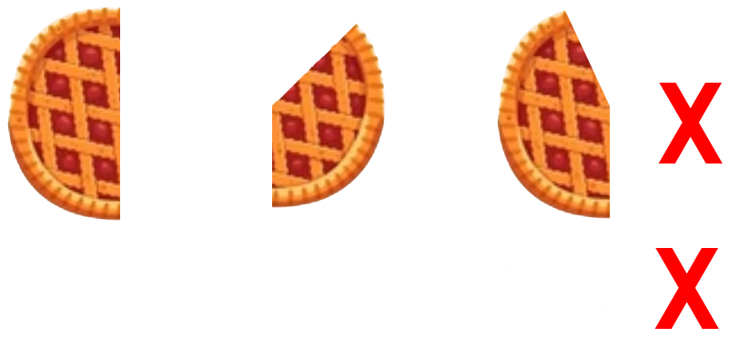

This will be a rather short segment, hyper-specific on working with fractions, because fractions are a very crucial part to mathematics and will follow you for the rest of your math journey, so getting these fundamentals down is essential. There are two cases/ways you will encounter fractions in math.

Consequences of adding fractions incorrectly (You get to eat less pie).
Additions/subtractions with fractions.
When presented with something like \(\frac{1}{2} + \frac{1}{3}\) you might be tempted to add the denominators and numerators, however under no circumstances do this.
If you carry it out that way you'd get \(\frac{2}{5}\), which, if you think about that logically, what these fractions represent, two fifths of something is less than
one half, so clearly adding something to one half(one third) can't give you something less than one half.
In order to add or subtract fractions their denominators need to be the same.
Let's look at how we'd correctly solve this problem: \(\frac{1}{2} + \frac{1}{3}\). First of all we need to make the denominators the same.
We can do that by multiplying the denominator and the numerator with the same number, because then they pretty much cancel each other out.
Now we juts need to find by which number to multiply both sides of the fraction with to get the same denominator.
We can do this by listing the multiple of the denominators and finding which one they have in common. We also want to be as efficient as possible, so we will
always choose the smallest (least) common denominator. In our case our denominators are 2 and 3. Their least common multiple is \(6 = 2\cdot3 = 3\cdot2\),
so we need to multiply the top and bottom of the left fraction with 3, and the right one with 2. Once we do that we get:
\(\frac{3}{6}+\frac{2}{6}\). Once we have the same denominators we can add them, or join them if that's easier for you. So:
\(\frac{3}{6} + \frac{2}{6} = \frac{3+2}{6} = \frac{5}{6}\). Anytime you have a subtraction or addition between fractions you can only add the numerators
if the denominators are the same.
Example: \(\frac{1}{2} - \frac{1}{3} + \frac{1}{5} - \frac{1}{7}\). We need to find the least common multiple between 2, 3, 5 and 7.
We can start by listing the multiples of the largest number, in our case 7, and then finding the smallest one which is divisible by 2, 3 and 5.
7, 14, 21, 28, 35, 42, 49, 56, 63, 70. So far we have not found a multiple of all of those,
and we also notice that the only multiple of the four numbers can only be a multiple of 70, so we check for those. 70, 140, 210.
With 210 we have finally found our least common multiple. Now we need to find by which we multiply each fraction so that the denominator is 210.
we do that simply by dividing 210 by the denominator, so for our 4 fractions that is going to be:
\(\frac{105}{210} - \frac{70}{210} - \frac{42}{210} + \frac{30}{210} = \frac{105-70-42+30}{210} = \frac{65 - 42}{210} = \frac{23}{210}\).
Exercise: \(\frac{2}{3} + \frac{5}{7}\)
Multiplication and division with fractions.
These are very easy and (hopefully) simple to understand.
For multiplication you simply multiply the numerator with the numerator and the denominator with the denominator. For example:
\(\frac{7}{3} \cdot \frac{6}{28} = \frac{7\cdot 6}{3\cdot 28} = \frac{42}{84}\). Now we introduce simplifying fractions.
Simplifying fractions is the opposite of multiplying the top and bottom of a fraction with a number, here we divide both sides of the fraction with a number.
In our case for example, we got that our fraction is 42 divided by 84, and we might immediately recognize that our fraction is equal to one half. How can we prove this?
We simplify by diving both sides by 42, so our numerator turns into 1 and our denominator turns into 2, therefore \(\frac{42}{84} = \frac{1}{2}\).
We can also make our calculations easier by simplifying before we even compute anything. Let's take our original example into consideration again.
\(\frac{7\cdot 6}{3\cdot 28}\), here we can divide both sides by 7, which will turn the 7 in the numerator into a 1 and the 28 in the denominator into a 4,
and we can also divide both sides by 3, which will turn the 6 in the numerator into a 2 and the 3 in the denominator into a 1. Therefore, our fraction simplifies to:
\(\frac{1\cdot 2}{1\cdot 4} = \frac{2}{4} = \frac{1}{2}\). This makes our calculation significantly easier.
Secondly note that dividing by something is the same as multiplying with the reciprocal of said something. For example, dividing by 2 is the same as multiplying with a half.
We apply this idea to dividing fractions. Let's say we have a division: \(\frac{4}{5} \div \frac{2}{10}\) We turn this into a multiplication of fractions by
multiplying with the reciprocal of the divisor, and any reciprocal of a fraction is simply the denominator and numerator switched, so this turns into:
\(\frac{4}{5} \cdot \frac{10}{2}\). Now we can simplify by dividing by 2 and 5. \(\frac{2}{1} \cdot \frac{1}{2} = \frac{2}{2} = 1\).
Notice that dividing a fraction by a fraction is the same as a double fraction, for example: \(\frac{\frac{1}{2}}{\frac{3}{4}}\), (one half divided by three quarters), you do the same thing, just multiply
with the reciprocal of the divisor. So: \(\frac{1}{2} \cdot \frac{4}{3} = \frac{2}{3}\). (Note that we did the simplification in our heads).
\( \begin{array}{l} 1.) \frac{19}{12} & 6.) \frac{5}{6} & 11.) \frac{14}{33} \\ 2.) \frac{13}{24} & 7.) \frac{5}{4} & 12.) \frac{6}{5} \\ 3.) \frac{41}{30} & 8.) \frac{49}{60} & 13.) \frac{6}{5}\\ 4.) \frac{23}{36} & 9.) -\frac{1}{6} & 14.) \frac{3}{4} \\ 5.) \frac{12}{35} & 10.) \frac{9}{20} & 15.) \frac{5}{9} \\ \end{array} \)